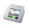
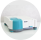

Любимые приборы
Название
Статус


pH-метр Mettler-Toledo International, Inc. SevenCompact S220

Спектрофотометр Varian, Inc Cary 50 Bio

Титратор


Коагулометр Tcoag, KC 4 Delta

Коагулометр Tcoag, KC 4 Delta